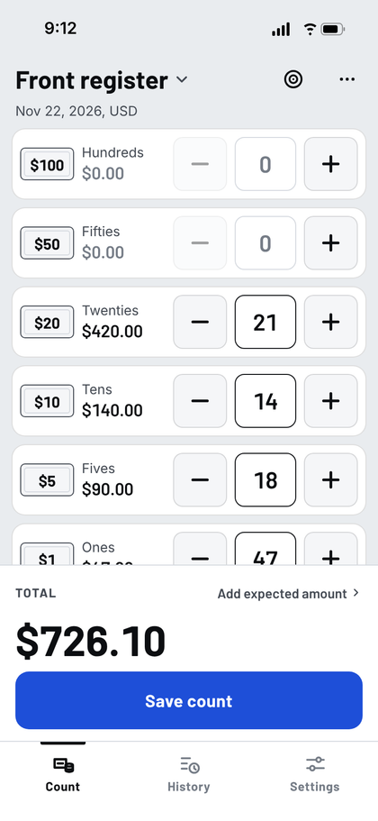
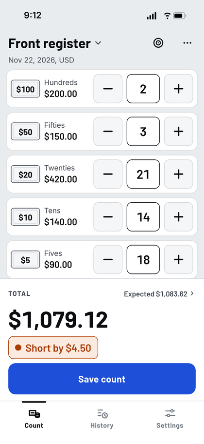
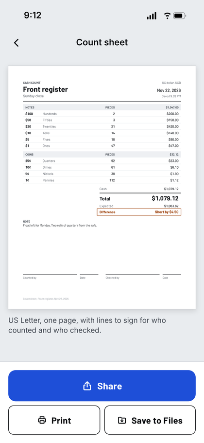
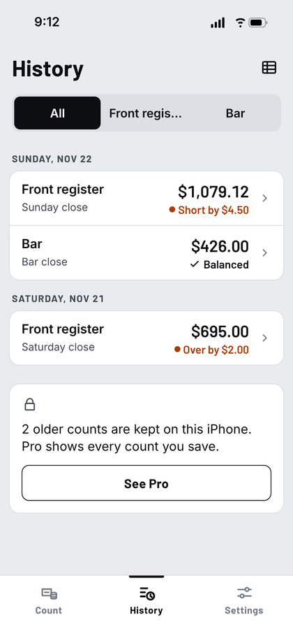
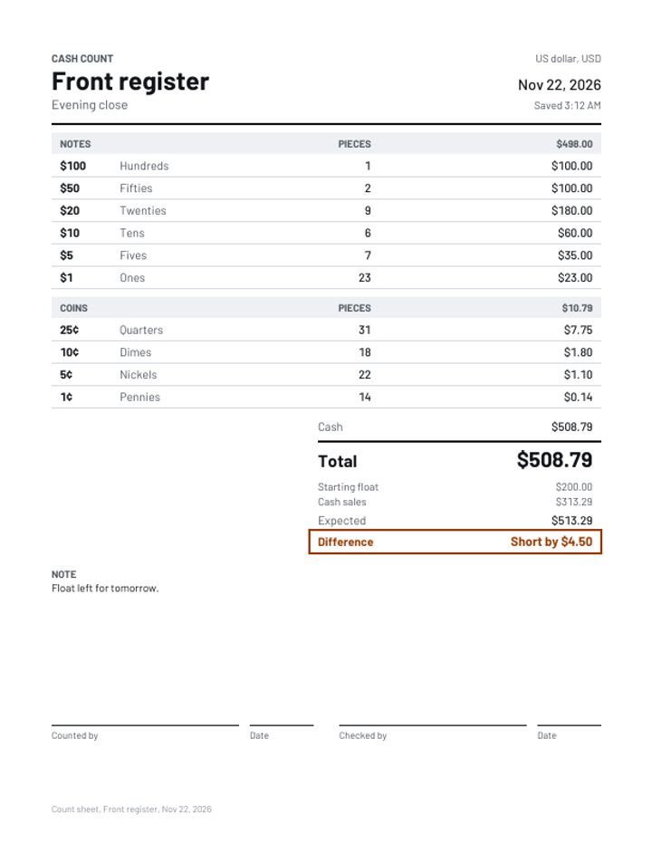

Count the till in under a minute.
Big buttons for one thumb, the total in large figures, and over or short in plain words. Save every close and print a count sheet to sign.
Get it on the App StoreiPhone. Free to download; counting is free.




Anyone closing a shop, cafe, bar or market stall at the end of the day. A club, church or school treasurer counting a collection. Anyone getting a bank deposit ready. You count the same till every day and want three things: the total, how far it is from what it should be, and a record.

The sample uses a made-up front register.
US dollar, Canadian dollar, euro, pound, Australian dollar and Mexican peso, picked from your iPhone's region. Every amount is added in whole cents, so the total is exact.
No account and no server. Your counts live on your iPhone and the app works in airplane mode. Cash Counter adds up what you type; it does not use the camera. See the privacy policy and questions and answers.